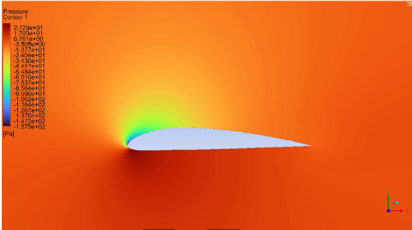

Hydrodynamic Tunnel Design
Final Year Project — Completed 2026
Design and development of a small/medium-scale, vertical, closed-loop hydrodynamic tunnel with an open-channel test section, targeting steady, uniform, low-turbulence flow for external flow experiments. The primary experimental objective is reproducing distinct flow regimes around a cylindrical body from laminar steady flow through transitional unsteady flow, corresponding to Reynolds numbers of 0 to approximately 8,000 (based on cylinder diameter).
A MATLAB-based head-loss model confirmed total system head loss (~0.9 m) is well within available pump head (~9 m). ANSYS Fluent CFD of the wide-angle diffuser revealed significant flow separation and turbulence, resolved by introducing internal guide vanes reducing the effective diffusion angle to 7° per channel. FEA of glass fibre components showed wall thickness alone was insufficient; ribs and reinforcements were added across all fabricated parts. All primary structural components were fabricated in glass fibre, and hydrogen bubble flow visualisation was integrated into the test section.
- Closed-loop tunnel design — contraction, diffusers, settling chamber, 90° bends, honeycomb
- MATLAB head-loss model: ~0.9 m loss vs ~9 m pump head
- ANSYS Fluent CFD — guide vanes added to wide-angle diffuser (7° per channel)
- FEA of glass fibre parts — ribs and reinforcements added from analysis
- Full glass fibre fabrication of all primary structural components
- Hydrogen bubble flow visualisation integrated into test section


NACA-4312 Aerofoil CFD Simulations
ANSYS Fluent Analysis
Numerical analysis of the aerodynamic characteristics of the NACA-4312 aerofoil using ANSYS Fluent. The study involved geometry preparation, structured mesh generation, grid independence analysis, solution convergence study, and simulation of lift and drag coefficients across a range of angles of attack. Turbulence modelling, convective and diffusive flux schemes, and pressure-velocity coupling methods were carefully selected and documented.
- NACA-4312 geometry meshed in ANSYS — structured mesh with boundary layer refinement
- Grid independence analysis performed to ensure mesh-independent results
- Solution convergence study documented for all simulations
- Lift and drag coefficients computed across multiple angles of attack
- Results validated against theoretical and published experimental data